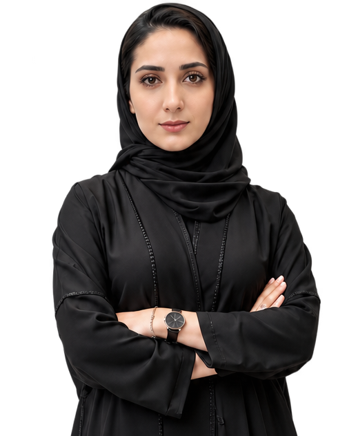

Project Coordination
Planning support, documentation, follow-up, stakeholder coordination and execution tracking.
Results-driven professional with a Bachelor’s degree in Business Administration and extensive experience in project management, business development, and telemarketing.

A practical profile built around coordination, documentation, business development, client communication and operational execution.
Four focused areas shaped directly by the professional experience and competencies documented in the CV.
Planning support, documentation, follow-up, stakeholder coordination and execution tracking.
Market analysis, client relationships, service improvement and growth-focused coordination.
Administrative operations, reporting, compliance follow-up and structured document control.
Telemarketing, tele-sales supervision, communication training and customer engagement.
Let’s connect around project coordination, business development or operational support.
Get In TouchProject coordination, event logistics, business development, administrative operations, HR support, accounting support and telemarketing supervision.